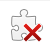
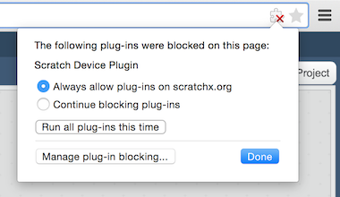

Scratch Arduino Extension

Launch the extension by going to the following URL:
http://scratchx.org/?url=http://khanning.github.io/scratch-arduino-extension/arduino_extension.jsSee the next section, Supported Languages, for information on alternate block tanslations.
On Firefox, you might see "Allow scratchx.org to run "Scratch Device?". Click "Allow...".
You might see another message, "Allow scratchx.org to run plugins?". Set both Adobe Flash and Scratch Device to "Allow and Remember" and click okay.
On Chrome, you'll need to enable NPAPI plugins. Go to chrome://flags/#enable-npapi and click enable:
Then, click "Relaunch Now" button:
Then, when you go to ScratchX.org, you should see a puzzle piece icon with an X on it: . Click on it and select "Always allow plug-ins on scratchx.org":

When you see the indicator light in the "More Blocks" tab turn green your ready to start using the extension!

Now take a look at the Scratch Blocks and the example projects to learn how to use the extension.